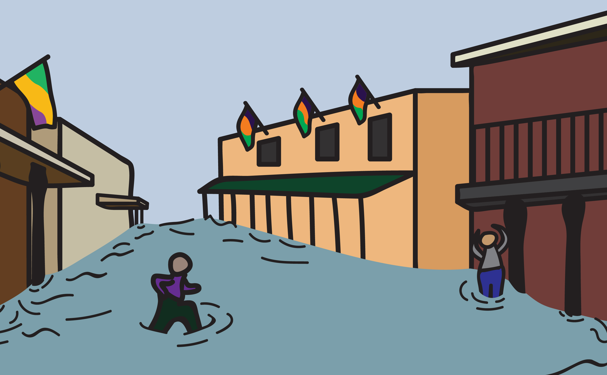
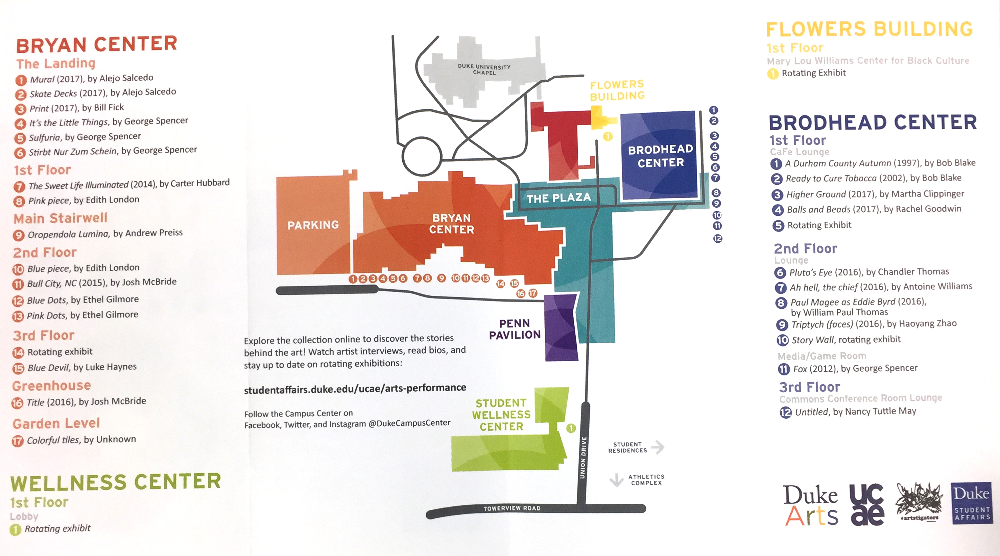
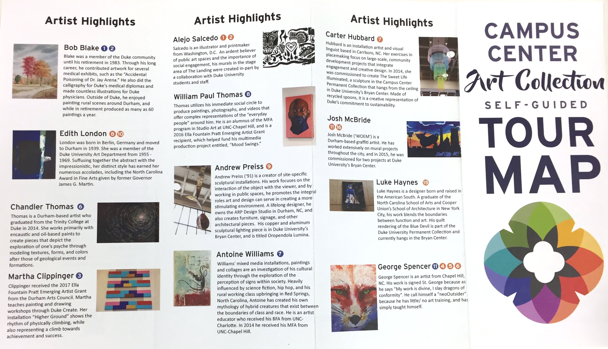
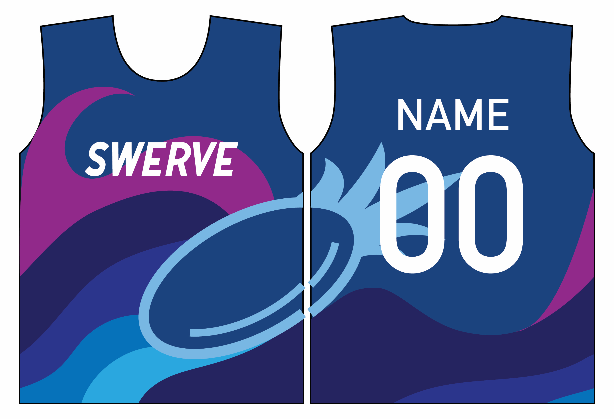
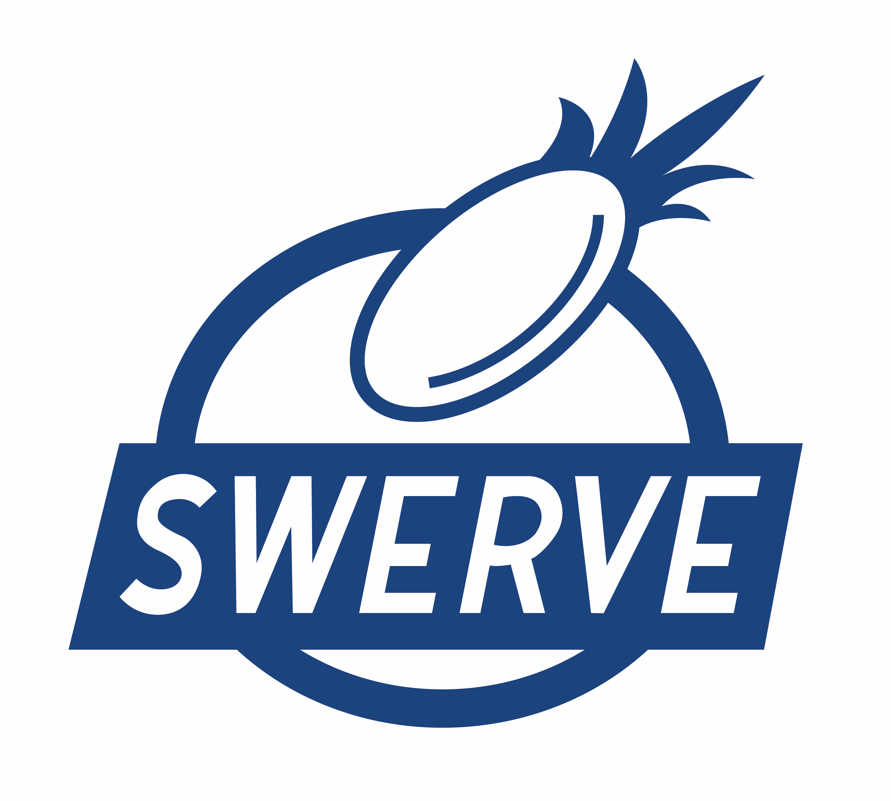
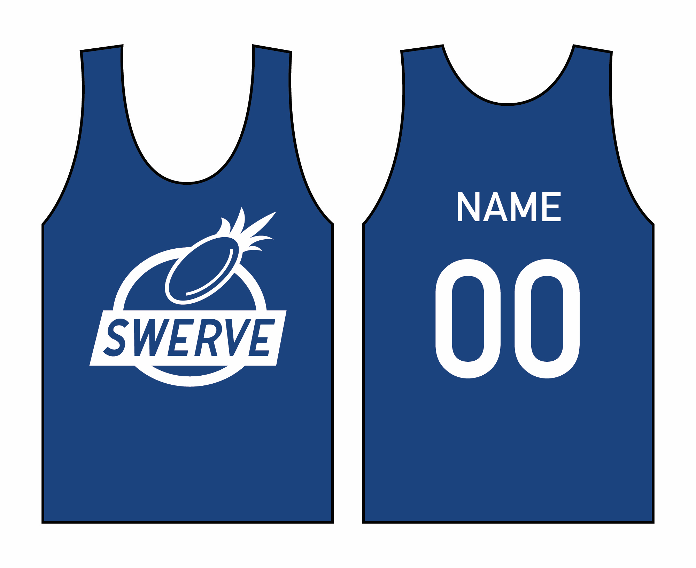
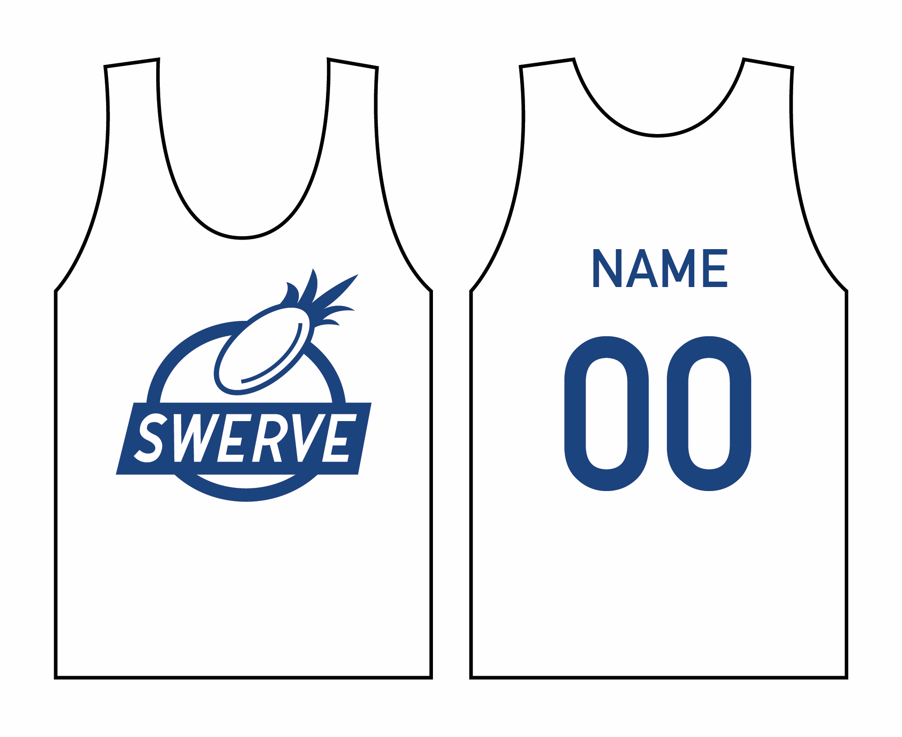
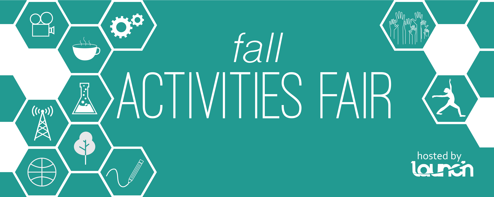

Design
Pew Research Center
In summer 2019, I interned in the Digital Design team at Pew Research Center. I created dozens of information graphics, photo treatments, and illustrations to share information in a visual format. Here is a selection below:
Duke Student Design Agency
Throughout my time at Duke, I worked on campus as a designer for the student-run design agency based in the student activities office. I created everything from logos to 2-foot by 3-foot banners for student organizations.







